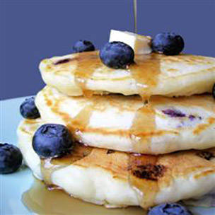

Perfect Blueberry Pancakes

The most delicious pancakes you'll ever eat! The key to these pancakes is all in the baking powder, letting the batter rise for an hour before hitting the pan gives these 'cakes the fluffiness you crave for breakfast. Best served with butter and brown sugar. Recipe makes 12 pancakes.
Ingredients
- 1 1/4 cups all purpose flour
- 1/2 tsp salt
- 1 tbs baking powder
- 1 1/4 tsp white sugar
- 1 egg
- 1 cup milk
- 1/2 cup blueberries
Directions
- In a large bowl, sift together flour, salt, baking powder and sugar. In a small bowl, beat together egg and milk. Stir milk and egg into flour mixture. Mix in the butter and fold in the blueberries. Set aside for 1 hour.
- Heat a lightly oiled griddle or frying pan over medium high heat. Pour or scoop the batter onto the griddle, using approximately 1/4 cup for each pancake. Brown on both sides and serve hot.
Source: Original Recipe